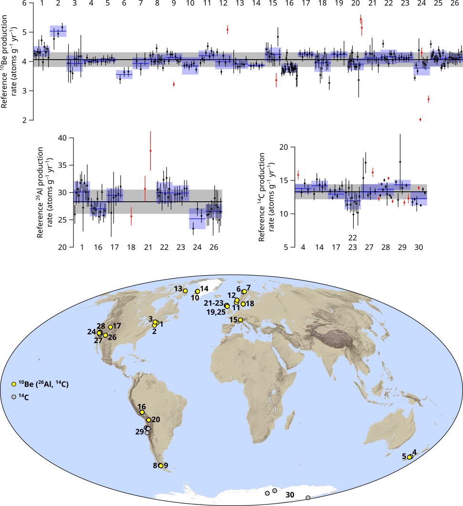

Production rate calibration
Here a global compilation of 10Be and 26Al (and 14C) production rate calibration data published 2009-2022 is presented in tab-delimited text files.
Calibration methodology:
•
All data has been divided into calibration sites including samples from one location with a single deglaciation age.
•
Calibration ages are derived from the original publications with radiocarbon ages generally recalibrated against IntCal13, Marine13 (
Reimer et al. 2013), and SHCal13 (
Hogg et al. 2013) using
OxCal 4.2.
•
The
10Be and
26Al concentrations from single sample repeat measurements have been combined as uncertainty-weighted means. To account for interlaboratory measurement uncertainties (
Jull et al. 2015), the highest of the reported (or uncertainty-weighted) concentration uncertainty or 2.9% (
10Be) and 4.9% (
26Al) of the concentration is used for the calibration.
•
For all calibration sites with at least three separate samples, an uncertainty-weighted site reference production rate is calculated for the expage calculator (prodrate.m). The calibration age uncertainty, which is not an independent variable for each sample of a calibration site, is added in quadrature to the initial site reference production rate.
•
To avoid data affected by prior and/or incomplete exposure, well-clustered site production rates are combined into a global 10Be and 26Al reference production rate. For scattered site production rates, with chi-square statistics p-value < 0.05 for the hypothesis that all sample production rates are drawn from one normal distribution, a maximum of 1/3 of the samples are excluded as outliers (still requiring a minimum of three separate samples). The site production rates that cannot pass this clustering test after outlier rejection are not included in the global reference production rate.
•
For global average production rates, the arithmetic mean of the well-clustered site reference production rates are used. To estimate the production rate uncertainty the root-mean-square deviation of all single sample production rates included in the well-clustered sites is used. This yields the global reference 10Be (4.06 ± 0.25 atoms g–1 yr–1) and 26Al (28.31 ± 2.22 atoms g–1 yr–1) production rates.
Global production rate kml: prodrate.kml
Global production rate log: P-log.txt
The production rate calibration data is presented in the following text files:
P-input – Input for production rate calibration of 10Be, 26Al, and 14C production rates.
P-output – Production rate calibration output with reference 10Be, 26Al, and 14C production rates.
P-origin – Original data with individual reported 10Be and 26Al measurements.
P-comments – Comments on the data.
P-refs – References for the production rate calibration.
For 2016-2019 data:
P-sites – Calibration site and global average reference 10Be and 26Al production rates.
P-calib – Data used for calibration of reference 10Be and 26Al production rates.
To display special characters in the text files correctly, use UTF-8 (unicode) encoding.
